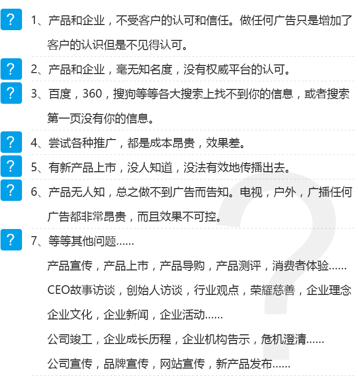
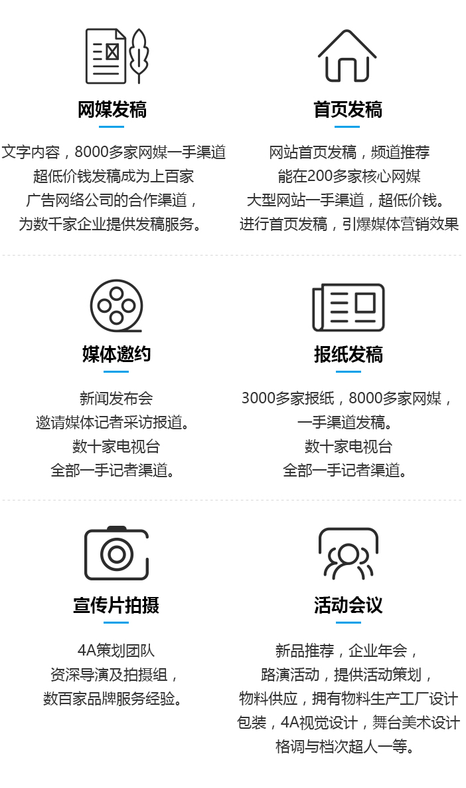

营销推广
2019-01-29
营销推广是要创造可以直接接触到受众的媒体资产，让用户主动加入我们一起分享冲刺的激情与胜利者的荣光。
一篇实用软文、一张图片、一个有趣活动、一场发布会、一次企业年会都可以是优质内容。
通过新闻发布会，记者采访，电视报道，报纸新闻，网站新闻...进行高效快速传播！
您是否遇到如下问题

营销推广的好处
综合多种渠道，让您的企业或产品，迅速传播出去！媒体发布是最高效快速的传播方式！
媒体首页发稿能很好地打响产品或企业的知名度。
报纸发稿具备无可比拟权威性。
新闻报道形式更让人相信和认可。
拍摄一条企业宣传片，展示企业的形象和文化。
新品发布会邀约众多媒体记者，让新品发布和推广不再是困难。
企业年会一场狂欢盛宴，在欢乐中展示企业实力。
营销推广服务
